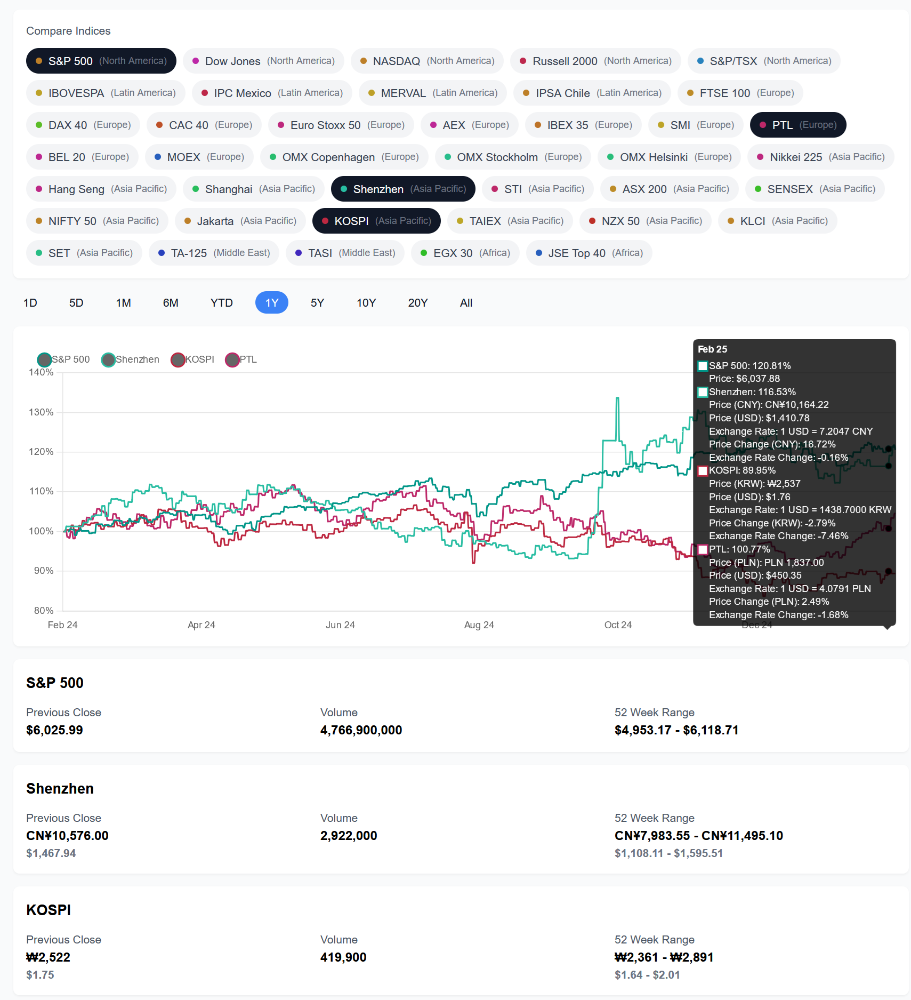

Feb 17, 2025
CursorAI for Frontend Dev: First Impressions
I made a small side project (blog post, Github) to analyze international index funds, timeboxed to 4 hours. It makes a good spike since it has reasonable coverage of fullstack work: light but reasonable React frontend, NextJS backend routes, several different API integrations (yahoo finance, federal reserve economic data), and some basic caching.

I'm pretty impressed. It's at least a 5x time savings, probably more since it's been a while since I did frontend dev. Most of my time went into finding and fixing bugs, and secondarily to finding the right APIs and data sources to use. I quickly stopped reviewing code closely since it's so fast to "accept all" and then test it out; if it doesn't work, restore a checkpoint and give it more deliberate instructions.
It largely works well even with colloquial prompting such as "Let's add api data fetching using the yahoo finance api". When I follow up with "I get CORS errors fetching from yahoo finance", Cursor figures out that it needs to generate a next js api route.
Development Methodology
- Initialize react app with
npx create-next-app@latest - Write a small requirements file
- Leverage Cursor's compose mode with the prompt
Help me build the Index Fund app based on the 'requirements.md' file. The UI should be similar to the attached UI, attaching the files in compose/ as well as a screenshot of the Yahoo Finance UI for S&P 500. - Iterate to add each feature at a time, including API data fetching, CORS fixes, 52 week range calculation, and multi-index graph comparison.
- Intermediate commands not recorded, but can see feature development in the commit history (Github).
Opportunities for Improvement
The productivity boost was great, but after the first couple hours I felt development velocity slowing down & bugs increasing as I asked it to extend functionality instead of writing mostly new code.
- Gradually reducing dev velocity: primarily caused by bugs as it enhances existing code or integrates into existing code. Adding all-new code stays fast.
- Inconsistent project structure & organization: sometimes creates arbitrary folders for new util files, puts methods in incorrect files, and tends to prefer creating new files instead of parsimonious new code plus refactor existing code.
- Code style: spaghetti code & small, harmless hallucination. Cursor kludged a lot of code into the IndexChart component. Refactoring works best with tactical instructions like "move these lines to a new method" or "refactor these params into a class".
Potential Solutions
- Project Organization: have a .cursorrules file that specifies more default patterns and folder structures.
- Dev Velocity: break down work more using markdown files, author a simpler requirements.md for core visualization, and author small docs for each additional feature slice.
- Dev velocity & code style: use more example files, review diffs more closely, and spend more time on refactors & code cleanups.
Request For Comment
What have your experiences been? I'm especially curious about continued / longer-term dev process, and about pure backend dev. Can compare & contrast with Github Copilot in VSCode, or other alternatives.